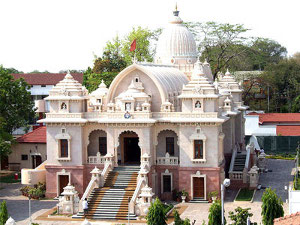
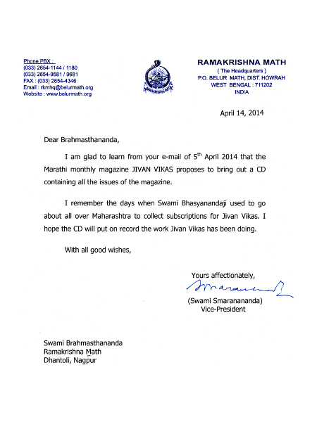

Nagpur
आत्मनो मोक्षार्थं जगद्धिताय च
“जीवन-विकास” - मराठी मासिक
‘आत्मनो मोक्षार्थं जगद्धिताय च’ - ‘आत्म्याच्या मुक्त्तीसाठी आणि जगताच्या हितासाठी’ - हे रामकृष्ण मठ व रामकृष्ण मिशनचे प्रसिद्ध घोषवाक्य स्वतः स्वामी विवेकानंदांनी मठ व मिशनच्या स्थापनेप्रसंगी दिलेले आहे. १८९७ला रामकृष्ण संघाची रीतसर स्थापना होऊन आजमितीस सुमारे ११७ वर्षे उलटली आहेत. रामकृष्ण संघाचे जगद्व्यापी कार्य सर्व दृष्टीने आणि सर्वांगाने वृद्धिंगत होत आहे. ‘रामकृष्ण मठ, नागपूर’ ही रामकृष्ण मठ व रामकृष्ण मिशन, बेलुर मठाचे (प. बं. ) एक अधिकृत शाखाकेंद्र आहे. या मठाची स्थापना १९२७ मधे प. पू. स्वामी शिवानंदजी महाराज, द्वितीय महाध्यक्ष, रामकृष्ण संघ यांच्या परमपावन हस्ते झाली. त्यावेळी अत्यंत लहान स्वरूपात सुरू झालेले येथील कार्य आता प्रचंड वाढले आहे. या मठाचे प्रथम अध्यक्ष प. पू. स्वामी भास्करेश्वरानंदजी महाराज, त्यानंतर पू. स्वामी व्योमरूपानंदजी महाराज व आता पू. स्वामी ब्रह्मस्थानंदजी महाराज यांच्या सुयोग्य मार्गदर्शनाखाली बहुविध अंगांनी मठाचे कार्य वाढतच आहे.  श्रीरामकृष्णदेवांचे विशाल मंदिर, प्रकाशन विभाग (हिंदी व मराठी), विवेकानंद विद्यार्थी भवन, सुसज्ज ग्रंथालय, चलचिकित्सालय, फिजियोथेरेपी यूनिट, होमिओपॅथी दवाखाना तसेच इतर अनेक प्रकल्प येथून चालवण्यात येतात. प्रकाशन विभागातर्फे १९५७ पासून ‘जीवन-विकास’ नावाचे मराठी मासिक प्रसिद्ध होऊ लागले. या मासिकाचे ध्येयधोरण ‘आत्मनो मोक्षार्थं जगद्धिताय च’ हेच असून मागील जवळपास ५७ वर्षांच्या कालखंडात त्याचेच प्रतिबिंब या मासिकात येणाऱ्या लेखांत आपल्याला पाहायला मिळेल. जीवन-विकासच्या मार्च १९५७च्या पहिल्याच अंकात या मासिकाचे कार्यक्षेत्र, यात येणारे लेख, निबंध यांविषयी जे वर्णन आले आहे, ते या मासिकाचे उद्दिष्ट दिशा स्पष्ट करून सांगते.
{kind=link}
प्रकाशक रामकृष्ण मठ, धन्तोलि, नागपूर्, महाराष्ट्र
रामकृष्ण मठ, धन्तोलि, नागपूर्, महाराष्ट्र
Digitized by
Sriranga Digital Software Technologies Private Limited